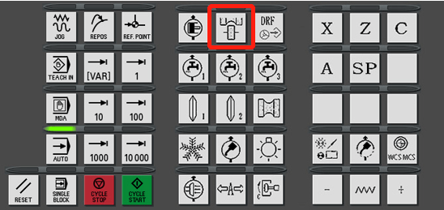
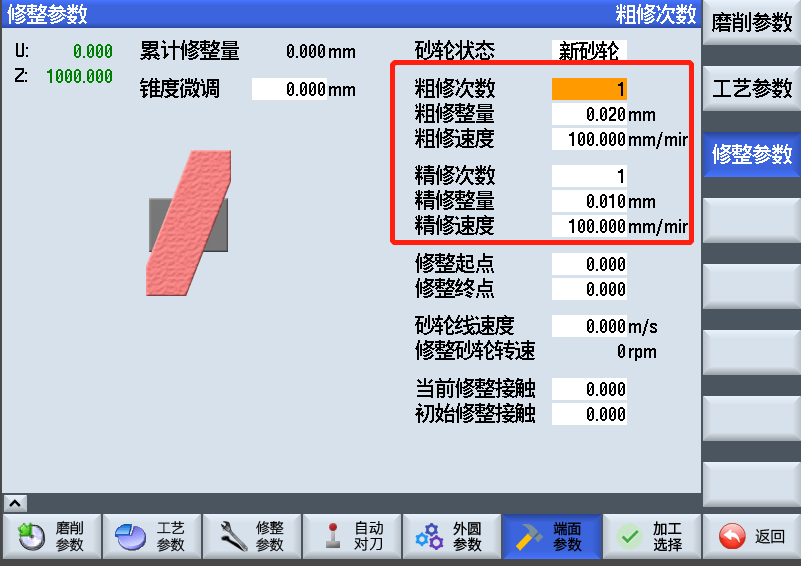

磨削中心介绍
外圆端面修整
外圆面
新砂轮修整
- 按下下边栏外圆参数界面，按下右边栏修整参数界面
- 选择新砂轮
- 设置精修粗修参数，修整速度是金刚笔水平移动的速度
- 手动开动机床，使金刚笔在外圆砂轮左侧合适位置，将Z轴坐标设置到修整起点
- 手动开动机床，使金刚笔在外圆砂轮右侧合适位置，将Z轴坐标设置到修整终点
- 手动开动机床，使金刚笔在前后位置上接触砂轮最高点，将U轴坐标设为初始修整接触
- 根据实际情况设置其他参数
- 返回加工选择界面，将右侧边栏选择到外圆点亮其他关闭
- 点亮修整键后启动程序

旧砂轮修整
- 设置粗磨次数和精磨次数
- 返回加工选择界面，将右侧边栏选择到外圆点亮其他关闭
- 点亮修整键后启动程序
如果启动后机床报警无法启动可能原因
- 外圆参数里磨削起点/终点数值不合适，手动将端面参数里左右端面初始磨削位置设置合适大小
- 检查设置的几个坐标是否正确
端面
新砂轮修整
- 按下下边栏端面参数界面，按下右边栏修整参数界面
- 选择新砂轮
- 设置精修粗修参数，修整速度是金刚笔水平移动的速度

- 手动开动机床，使金刚笔在外圆砂轮外前侧合适位置，将U轴坐标设置到修整起点
- 手动开动机床，使金刚笔在外圆砂轮外后侧合适位置，将U轴坐标设置到修整终点
- 手动开动机床，使金刚笔在左侧接触砂轮最高点，将Z轴坐标设为初始修整接触
- 根据实际情况设置其他参数
- 返回加工选择界面，将右侧边栏选择到左端面/右端面点亮其他关闭
- 点亮修整键后启动程序
旧砂轮修整
- 设置粗磨次数和精磨次数
- 返回加工选择界面，将右侧边栏选择到左端面/右端面点亮其他关闭
- 点亮修整键后启动程序
如果启动后机床报警无法启动可能原因
- 端面参数里耳高/壁厚设置不合适，请设置合适大小
- 检查设置的几个坐标是否正确
注意事项
- 修整外圆时每修一次会自动调整端面修整起点终点，这是为了外圆面修整过多导致修端面的时候位置不合适，同理修端面的时候会自动调整外圆修整起点终点
- 每次更换新砂轮需要重新校准各个位置